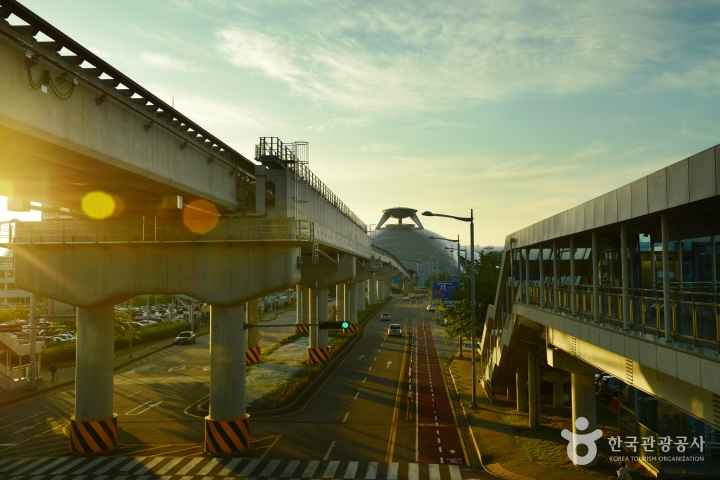
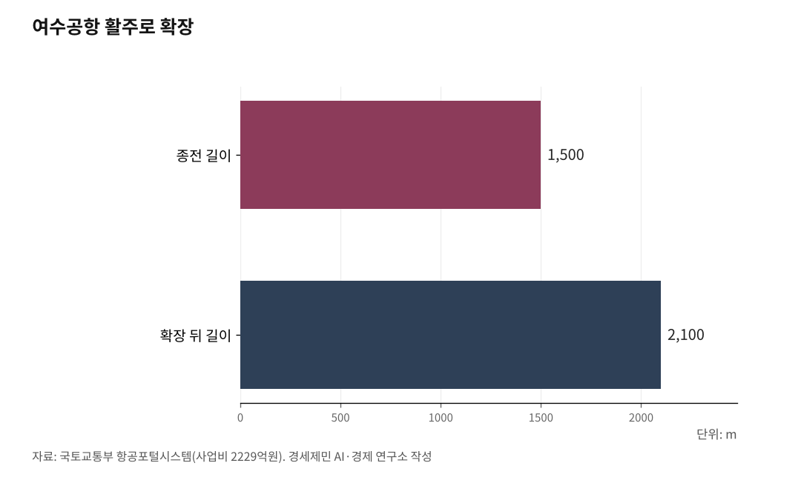

[항공기사·하편] 인천공항 25년, 동북아 허브 채우려면 지방공항 직결이 답
인천~제주 5월 12일 재개, 9년 만의 정기편 복원
인천~김해 환승 내항기 주 39회 증편, 인천~부산은 3분기 복항 예정
무안 김대중국제공항·사천·여수, 호남과 남해안 거점으로 이어야
경세제민 AI·경제 연구소 김갑봉 박사

(상편에서 이어짐)
10년 가까이 닫혀 있던 인천공항~지방공항 직결 노선이 2026년 들어 움직였다. 출발점은 이재명 대통령 지시였다. 이재명 대통령은 지난 2월 25일 확대국가관광전략회의에서 "인천공항에서 국내선은 왜 안 띄우냐"고 지적했다. 정부는 인천~지방공항 직항 노선을 단계적으로 신설하라고 관계 부처에 지시했다.
1. 인천~제주 5월 12일 재개, 9년 만의 정기편
지시가 낳은 첫 결과가 인천~제주 노선 재개다. 국토교통부는 지난 3월 24일 제주항공(7C)이 신청한 인천~제주 국내선 노선 운항을 허가했다.
운항 기간은 5월 12일부터 8월 7일까지 약 3개월이다. 운항 횟수는 주 2회 왕복이다. 5월은 화·토요일, 6월부터는 월·금요일에 운항한다. 기종은 보잉 737-800(189석) 또는 737-8(174석)이다.
이 노선이 끊긴 시기는 2016년 10월이다. 9년 7개월 만의 재개다. 당시 단항한 이유는 수익성이었다.
같은 날 인천~김해 환승 내항기 증편도 발표됐다. 4월부터 주 35회에서 주 39회로 4편 늘었다. 정부는 2026년 3분기까지 인천~부산 노선도 복항시키겠다는 계획을 밝혔다. 저비용 항공사가 운항할 예정이라는 정도까지 알려졌다.
두 변화가 합쳐지면 그림이 분명해진다. 인천공항에서 국제선을 내린 외국인 관광객이 김포공항을 거치지 않고 곧바로 제주로 갈 수 있다. 제주관광공사 통계를 보면 2025년 제주를 방문한 외국인은 224만2187명이다. 2024년 대비 17.7% 늘었다. 인천공항 제1여객터미널 국내선 체크인 시설과 수하물 처리 시스템도 다시 가동된다.

2. 시범운항 3개월·주 2회, 한계도 뚜렷
한계는 여전하다. 시범 운항 3개월에 주 2회는 출발점이다. 제주항공 관계자는 "지방 관광의 균형 성장과 지역 간 이동 편의를 높이는 데 도움이 될 것으로 기대한다"고 밝혔다. 항공업계에서는 수요가 충분히 확보되지 않으면 노선이 다시 흔들릴 수 있다는 우려가 나온다. 2016년 단항 당시도 수익성이 핵심 변수였다. 다른 항공사들이 신중한 이유다.
또 한 가지 한계는 제주공항(CJU) 자체에 있다. 제주공항은 시간당 슬롯이 35편으로 이미 포화 상태다. 5분당 4대 제한 규칙도 운영되고 있다. 인천~제주 노선이 주 2회로 시작한 데에는 슬롯 한계도 작용했다. 제주공항이 지금보다 더 증편을 받아내기는 어렵다. 인천~제주 직결을 본격 확대하려면 제주공항 슬롯 운영 자체를 다시 들여다봐야 한다.
3. 무안공항 폐쇄 1년 4개월, 사망 179명
5월의 인천~제주가 출발점이라면 다음 단계는 호남과 남해안 거점 지방공항이다. 무안국제공항(MWX), 사천공항(HIN), 여수공항(RSU)이다.
무안공항부터 보자. 무안공항은 2024년 12월 29일 제주항공 2216편 활주로 이탈 사고 이후 폐쇄가 이어지고 있다. 사고로 탑승자 181명 가운데 승무원 2명을 제외한 179명이 숨졌다.
한국공항공사가 공항 운영을 즉시 중단했다. 국토교통부는 2025년 1월 5일을 시작으로 1월·4월·7월·10월 단위로 폐쇄 기한을 7차례 이상 연장했다. 4월 5일까지로 설정됐던 폐쇄 기간을 추가로 3개월 연장하는 방안이 검토되고 있다. 사고 현장에서 미수습 유해가 추가로 발견되면서 7월 재개항도 무산됐다. 국토교통부가 발표한 2026년 하계 정기 항공편 운항 계획에서도 무안공항 노선은 빠졌다. 사고 이후 약 1년 4개월이 지나도록 폐쇄가 풀리지 않고 있다.
4. 광주 군공항 무안 이전 합의, '김대중국제공항'으로
폐쇄가 길어지는 사이 무안공항 위상을 바꾸는 결정이 내려졌다. 2025년 12월 17일 광주도시공사에서 '광주 군 공항 이전 6자 협의체' 첫 회의가 열렸다. 광주광역시·전라남도·무안군·기획재정부·국방부·국토교통부가 공동발표문에 서명했다.
합의로 광주공항 국내선은 호남고속철도 2단계 개통 시점인 2027년 말에 맞춰 무안공항으로 이전된다. 군공항 이전 시기는 특정되지 않았다. 국방부는 "최대한 신속히 이전"하겠다는 입장을 밝혔다.
공동발표문에는 정부가 무안공항을 서남권 거점공항으로 육성하려 호남지방항공청을 신설한다는 내용도 담겼다. 공항 명칭을 '김대중국제공항'으로 변경하는 방안도 검토한다. 광주·전남이 20년 가까이 이어온 갈등에 찍은 종지부다.
호남고속철도 2단계가 2027년 개통하면 광주송정역, 나주역, 목포역에서 KTX와 SRT로 무안공항역까지 닿는다. 인천공항이 KTX 직결을 잃은 것과 같은 시기에 호남권 거점공항은 고속철도 직결을 얻는다.
5. 무안공항 안전 보강, 사고 이후 가장 강도 높게
무안공항 안전성은 사고 이후 강도 높게 보강됐다. 사고 직접 원인 가운데 하나로 지목된 것이 활주로 종단 안전구역과 콘크리트 둔덕 위 방위각시설(로컬라이저)이었다.
국토교통부 특별안전점검 결과를 보면 정부는 무안·광주·여수·포항경주 등 4개 공항 콘크리트 둔덕을 철거하고 부러지기 쉬운 구조로 재설치하기로 했다. 종단안전구역도 국제민간항공기구(ICAO)가 권고하는 활주로 끝단 240m 기준에 미달한 7개 공항(무안·김해·여수·포항경주·사천·울산·원주)은 부지 매입이나 활주로 이탈 방지 시설(EMAS) 설치를 검토하고 있다.
무안공항 활주로는 사고 직전 2797m×45m였다. 2025년까지 3160m로 연장하는 공사를 진행했다. 사고 이후 조류 탐지 레이더, 열화상 카메라, 음파 발생기 등을 추가로 도입했다. 조류 대응 전담인력도 4명에서 12명으로 늘었다.
재개항 이후 광주공항 국내선까지 통합되면 무안공항은 호남권 항공 수요가 집중되는 거점공항이 된다. 인천공항~김대중국제공항 직결 노선은 그 시점에 본격 논의할 사안이다.
6. 사천공항 국제공항 승격 추진, 섬에어 취항 예정
사천공항은 다른 맥락에서 주목된다. 경상남도 사천에는 우주항공청이 2024년 5월 개청했다. 사천공항을 국제공항으로 승격하는 방안을 추진하고 있다.
2025년 4월 경상남도와 진주시·사천시·한국공항공사·섬에어가 협약을 맺었다. 신생 소형 항공사 섬에어는 2026년부터 사천~김포·제주·울릉 노선을 단계적으로 운항할 계획이다. 사천공항에는 현재 진에어가 김포~사천 일 2회를 운항한다.
사천공항 활주로는 2744m×45m다. 안전구역은 122m와 177m다. 콘크리트 기초 위에 로컬라이저가 설치된 2곳은 흙을 쌓아 기초대를 지하화하는 방안을 검토하고 있다. 콘크리트 기초 높이는 0.6m다. 사천공항도 ICAO 종단안전구역 240m 기준 미달 7개 공항에 들어간다.
7. 여수공항, 전라선 KTX 개통 후 수요 절반으로
여수공항은 1995년부터 시작된 활주로 신설 사업으로 모습이 달라졌다. 국토교통부 항공포털시스템 자료를 보면 사업비 2229억원을 투입해 활주로가 종전 1500m×30m에서 2100m×45m로 늘었다. 2004년 11월 25일 신활주로와 신관제탑 운영을 시작했다. 2005년 11월 신여객청사가 문을 열었다.
여수공항 이용객은 2005년부터 2012년까지 60만명대를 유지했다. 2011년 10월 5일 전라선 KTX가 개통됐다. 항공 수요가 줄면서 2013년 40만명대로 감소했다. 현재 운항 노선은 김포~여수(아시아나항공 일 2회와 진에어 일 1회)와 여수~제주(대한항공 일 1회)다. 여수~제주는 2023년 10월 재취항했다.
여수공항도 콘크리트 둔덕 철거 대상에 들어간다. 둔덕 높이가 4.0m로 가장 높았다. 종단안전구역도 ICAO 기준에 미달한다.
세 공항 모두 안전 보강이 마무리되지 않은 상태에서 인천공항 직결 노선을 신설하기는 어렵다. 그러나 안전 보강이 끝나는 시점에 맞춰 인천공항 직결을 준비하는 것은 별개 과제다. 무안공항은 2027년 말 광주공항 국내선 통합과 호남고속철도 2단계 개통을 계기로, 사천공항은 우주항공청 개청 효과와 국제공항 승격 흐름 속에서, 여수공항은 남해안 관광 거점으로서 인천공항과 직결될 수 있다.
8. 환승객 804만명이 흘러갈 통로 만들어야
인천공항은 25년 만에 2024년 ACI 기준 국제선 여객 세계 3위에 올랐다. 환승객 804만명을 처리하는 동북아 허브공항으로 자리 잡았다. 2026년 5월 인천~제주 시범 운항, 인천~김해 환승 내항기 증편, 3분기 인천~부산 노선 신설 계획은 그동안 막혀 있던 인천공항~지방공항 연결의 첫 단추다.
프랑크푸르트공항이 ICE 240편으로 28개 독일 도시를 직결하고 스키폴공항이 KLM 시티호퍼로 80개 유럽 도시를 잇는 동안 인천공항은 환승 내항기 1개 도시(김해)에 머물렀다. 인천공항 KTX 직결도 2018년 폐지됐다. 이 격차를 메우려면 항공과 고속철도 두 축을 동시에 봐야 한다.
항공 쪽에서는 인천~제주를 시범 운항으로 끝내지 않고 정기편으로 확대하는 과제가 있다. 인천~부산 신규 노선 안착, 무안 김대중국제공항과 사천·여수 등 남해안 공항을 단계적으로 인천공항에 잇는 과제도 있다.
철도 쪽에서는 인천공항 KTX 직결의 재검토 또는 그에 준하는 대안이 필요하다. 인천발 KTX가 송도역 출발로 2026년 12월 개통을 앞두고 있다. 인천공항 출발이 아니다. 호남고속철도 2단계가 2027년 개통하면 무안공항역이 신설된다. 인천공항은 여전히 고속철도와 단절된 채 남는다.
환승객 804만명이 인천공항에 내리는 순간 한국 어디로든 흘러갈 통로가 열려 있어야 한다. 글로벌 선진 허브공항들이 25년에 걸쳐 보여준 길이다.
참고문헌
국토교통부, "2026년 하계 정기 항공편 운항 일정 확정" 발표, 2026.3.19.
국토교통부, "제주항공 인천~제주 국내선 노선 운항 허가" 발표, 2026.3.24.
제주항공, "인천~제주 노선 주 2회 시범 운항" 공식 발표, 2026.3.31.
글로벌이코노믹, "제주항공, 인천~제주 노선 주 2회 시범 운항…이동 편의 확대", 2026.3.31., https://www.g-enews.com/article/Industry/2026/03/20260331163056330ea14faf6f5_1
광주광역시, "광주 군 공항 이전 관련 6자 협의체 공동 발표문", 2025.12.17.
오마이뉴스, "[전문] 광주 군공항 이전 관련 '6자 협의체 공동' 발표문", 2025.12.17., https://www.ohmynews.com/NWS_Web/View/at_pg.aspx?CNTN_CD=A0003191859
서울신문, "광주 군·민간공항 무안 통합 이전 합의…'김대중 공항'으로 새출발", 2025.12.18., https://www.seoul.co.kr/news/society/2025/12/18/20251218500051
뉴시스, "광주·전남 61년 갈등 끝…군·민간공항, 무안 이전 합의", 2025.12.17., https://www.newsis.com/view/NISX20251216_0003442772
국토교통부, "공항시설 항행안전시설 특별안전점검 결과" 발표, 2025.1.13.
한국일보, "[속보] 제주항공 추락 참사 사망자 179명... 생존자 단 2명", 2024.12.29., https://www.hankookilbo.com/News/Read/A2024122919080005897
위키백과, "제주항공 2216편 활주로 이탈 사고", https://ko.wikipedia.org/wiki/제주항공_2216편_활주로_이탈_사고
국토교통부 항공포털시스템, "여수공항 확장 사업비", https://www.airportal.go.kr
한국공항공사, "공항별 시설현황 공공데이터", 2025.9.14., https://www.data.go.kr